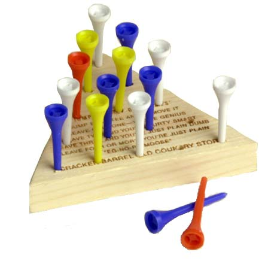

In particular, this project will cover the following concepts we have discussed in class:

A good description of the game is detailed by Chuong Do
Peg solitaire describes a general class of peg-jumping games in which a player is initially presented with a board containing holes and wooden pegs filling a subset of these holes. For any given move, a player must select one of the pegs on the board which has an adjacent peg and an empty hole following that adjacent peg. The original peg is moved to the empty hole and the adjacent "jumped" peg is removed from the board. The game ends when no more legal "jumps" may be made. The object of the game is to remove all pegs from the board except one.
A sample move is shown below, where the peg in the middle of the left side of the triangle is moved to the top hole, and the peg inbetween is removed.
O # / \ / \ # - O O - O # = peg / \ / \ / \ / \ O = empty hole # - # - # ----> O - # - # / \ / \ / \ / \ / \ / \ O - # - # - O O - # - # - O / \ / \ / \ / \ / \ / \ / \ / \ O - O - O - O - O O - O - O - O - O
There will be three portions to the display, the board, the buttons, and the peg cup.
When the game is launched, it will display the board, with all but the top hole filled with pegs. There will be two buttons on the left side of the screen, one for RESET, one for QUIT. On the bottom right-hand side of the screen, there will be a cup, represented by two concentric circles, where jumped pegs are placed.
The user should be able to click on the RESET button or the QUIT button at any time. The RESET button will return all pegs to their initial hole. The QUIT button will immediately quit the game.
The user is also allowed to click on pegs that have a possible place to jump. When selected, the pegs will change colors, and the avaialble holes to jump into will also change colors. Holes are only available when a peg is inbetween the selected peg and the empty hole. The user can now either deselect that peg, or select an available hole. If the peg is deselected, all items revert to their normal colors. If an available hole is selected, the peg will move to the hole, and the jumped peg will move to the peg cup in the lower right-hand side. All items will return to their normal colors.
When there are no more possible pegs to be jumped, the game will display the following messages underneath the board, depending on how many pegs remain.
The user can then select to RESET, or to QUIT.
For part 1 of the assignment, create a design document detailing all the objects you will need to represent the display and interactions necessary to carry out the game. Be as detailed as possible, discussing the components and functionality needed for each part of the game.
cs.centenary.edu through either Secure FTP or WinSCP using your
cs login and password. Create a subdirectory from csc207
called project3. Copy your solitaire.py and pieces.py project into this directory, along with any other files
you need to run your code. Make sure
you have followed the Python Style Guide, and
have run your project through the Automated Style Checker.You must hand in: